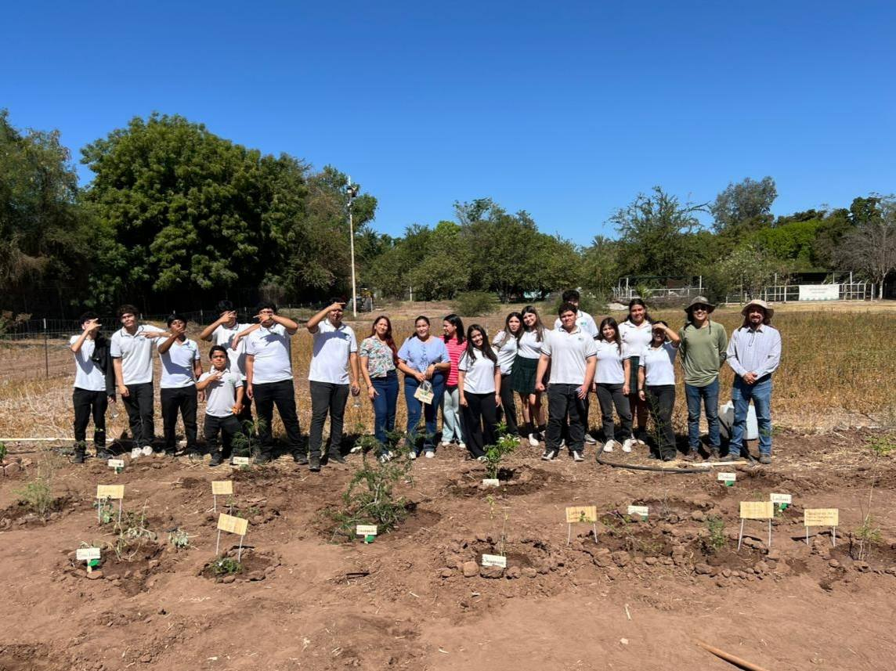
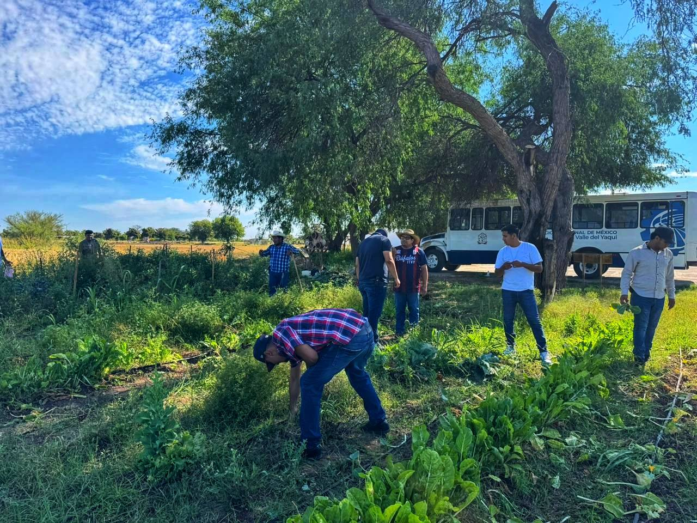
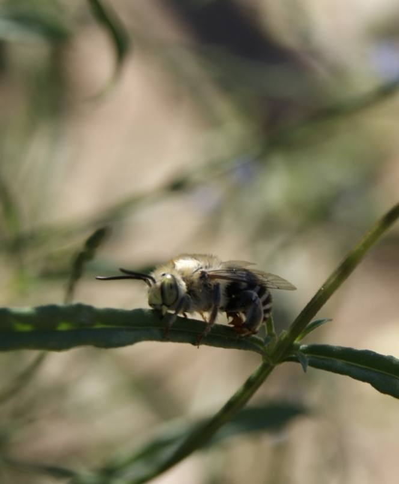
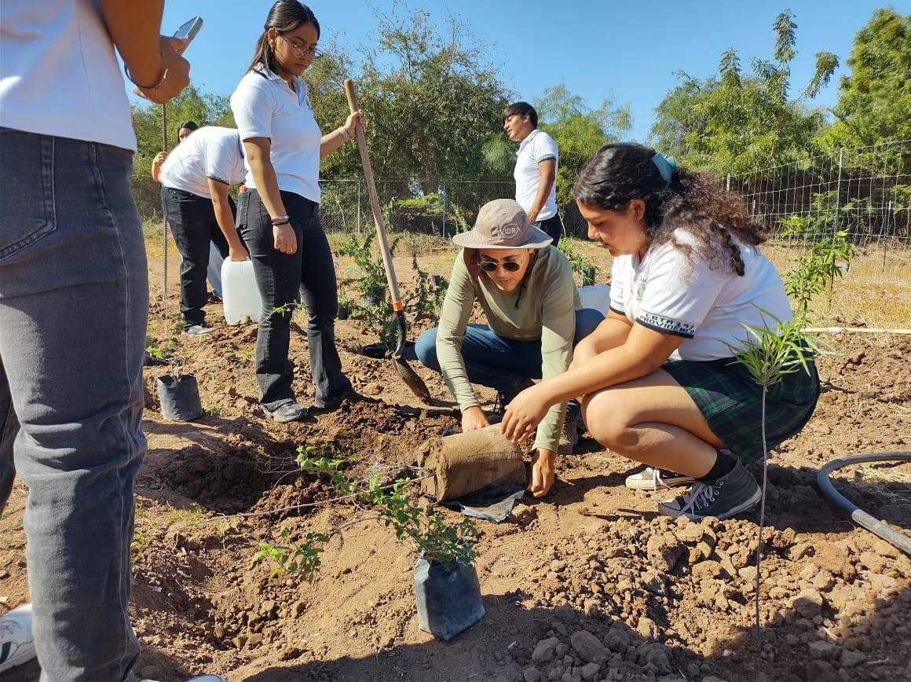
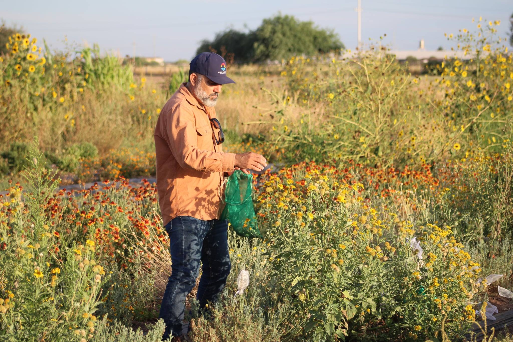
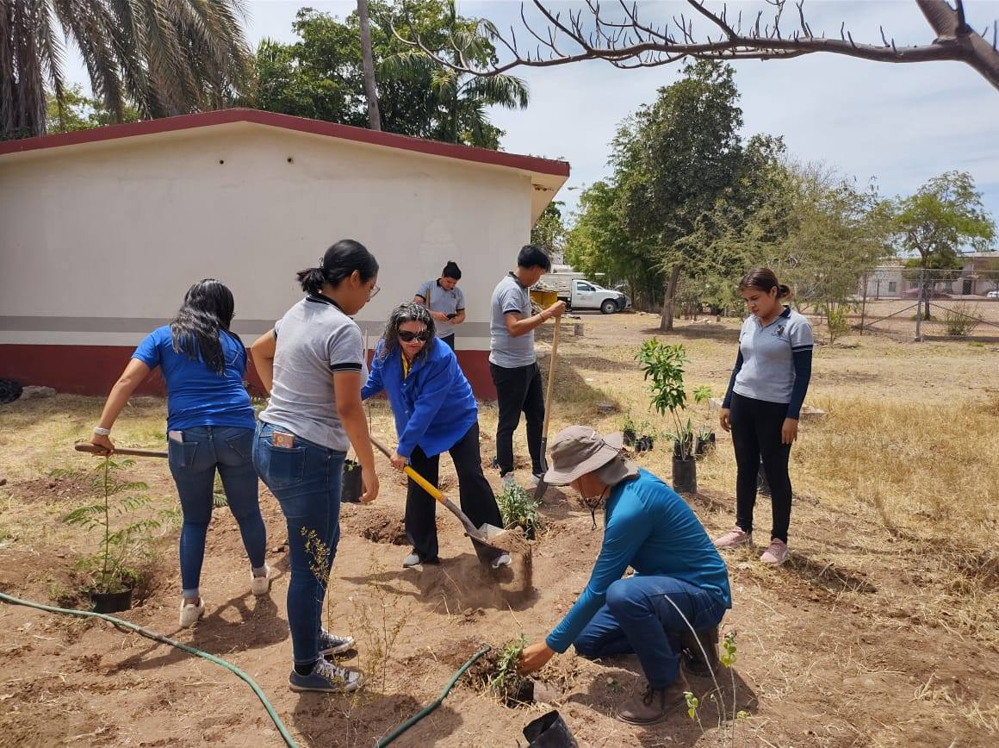
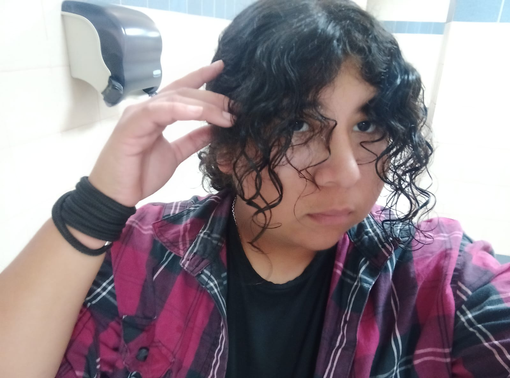
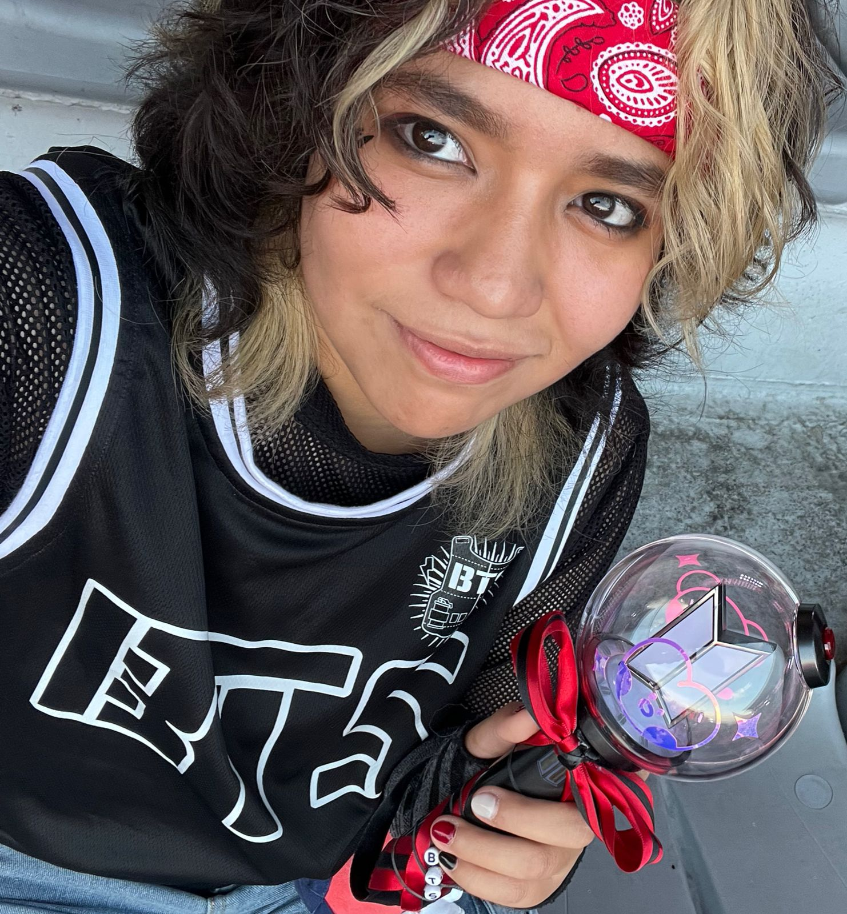

Comprometidos con el cuidado y conservación del medio ambiente en Sonora
Promovemos la educación ambiental, la reforestación y el desarrollo sustentable en nuestra comunidad.
Somos una organización dedicada a la protección y conservación del medio ambiente en el Valle del Yaqui. Trabajamos con la comunidad para fomentar prácticas sustentables.
Promover la cultura ambiental y desarrollar proyectos que protejan nuestros recursos naturales.
Ser un referente en educación y acción ambiental en Sonora.

En vinculación con Ingeniería en Ciencias Ambientales - ITSON y la Fundación Ambiental del Valle del Yaqui AC, alumnos del CBTA 197 participaron en la creación de un Jardín Nativo para Polinizadore, un espacio pensado para brindar alimento y refugio a abejas nativas, mariposas, colibríes y otros insectos esenciales para el equilibrio ecológico.


El Jardín para Polinizadores es un proyecto impulsado por la Fundación Ambiental del Valle del Yaqui en colaboración con Ingeniería en Ciencias Ambientales - ITSON , y mantenido con dedicación por alumnos de servicio social que, más allá de cumplir horas, están aprendiendo sobre especies nativas.



Celular:644 414 1943
Email: favy.sonora@gmail.com
Veracruz #467 int 2 entre Morelos y Yaqui, Ciudad Obregón, Mexico, 85010

Diseño y desarrollo web
Investigación y contenido

Organización y presentación